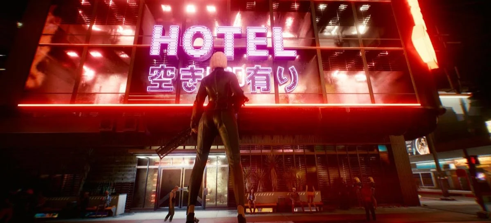

NVIDIA GeForce RTX 4090 entrega apenas 16 FPS em Cyberpunk 2077 Overdrive Mode sem DLSS
Para você usar o Overdrive Mode de Cyberpunk 2077 perfeitamente, será necessário acionar o DLSS 3 em sua máquina para uma melhor execução do jogo
A NVIDIA divulgou um vídeo inédito para demonstrar o poder do Overdrive Mode de Cyberpunk 2077, mostrando suas limitações como um dos exemplos para o público adotar de vez o DLSS 3. De acordo com a apresentação da empresa, acionando o Overdrive Mode sem o DLSS 3 faria o jogo da CD Projekt Red atingir apenas 16 FPS em alguns cenários. Já com a IA que auxilia na resolução e upscaling, ele atinge 127 FPS na mesma execução.
Fazendo uma comparação lado-a-lado, vale notar que o RT está configurado no Ultra e também que eles estão utilizando o GPU GeForce RTX 4090 como o padrão. Para ter uma ideia do que esperar da performance, ele não passa em momento algum dos 34 FPS sem o DLSS 3. Com o uso da ferramenta, ele gira entre os 117-138 FPS.
O Overdrive Mode, além de trabalhar em conjunto com o DLSS 3, também terá acesso ao RTX Direct Illumination - replicando automaticamente a iluminação das fontes de ray tracing. De acordo com a NVIDIA, ambas em conjunto permitirão que o sombreamento chegue próximo da perfeição e que será algo inédito dentro da indústria gaming.
A ascensão de Cyberpunk 2077
A experiência de Cyberpunk 2077 pode ter começado mal lá em 2020, demorando um pouco mais de dois anos para ele se reestabelecer e se tornar um dos maiores ícones da indústria. Após diversas melhorias e até mesmo a apresentação de um anime que voltou a atrair o público, a CD Projekt Red lançará o Overdrive Mode para oferecer diversas melhorias visuais e de iluminação.
Isso significa que cada luz dentro do título causará um efeito de sombreamento natural, dos neons que você enxerga pelas ruas até mesmo os postes e semáforos. Conforme o público passar por elas, assim como carros, vai gerar os efeitos e trazer mais fidelidade visual para as placas mais poderosas do mercado.
O lançamento do recurso está agendado para chegar no dia 11 de abril de 2023, o que significa que o veremos em ação em menos de uma semana. Levando em conta as melhorias trazidas pelo DLSS 3, recomendamos que já trate de adotar o recurso em seu GeForce RTX 4090 para trazer a experiência definitiva.